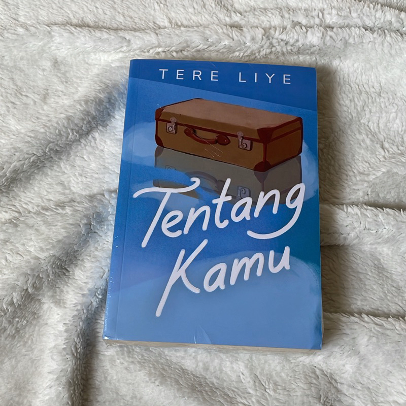
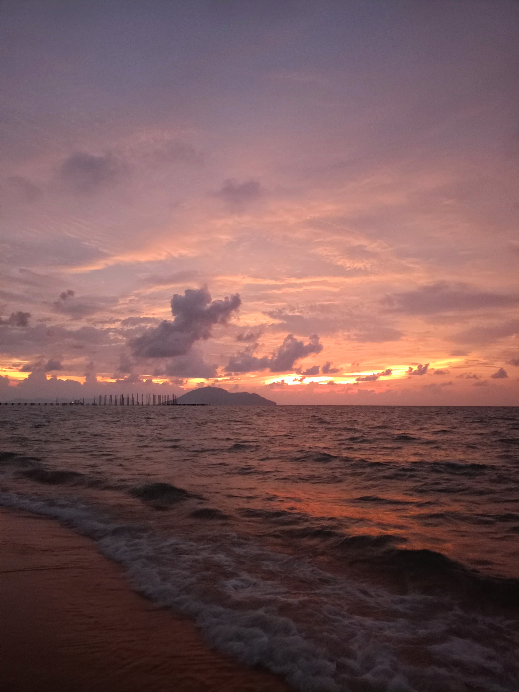

Nailong
Nailong itu naga kuning yang menggemaskan,tapi banyak banget yang bilang ini dino. Oh iya, animasinya dalam bahasa Mandarin lohh. Nailong selucu ituu.
Alasan aku suka Nailong adalah:
- Pipinya chubby
- Cara dia ngomong Mandarin tuh lucu banget
- Kepribadiannya ceria dan manja
- Dan, jujur, masih banyak lagiii. Kalau ditambahkan mau sebanyak apa cobaaa? hihi
Lagu Favoritku
Lagu ini lagi sering aku dengarkan akhir-akhir ini. Kalau dibilang favorit.. mungkin sementara iyaaa.
Novel Favoritku
Salah satu karya Tere Liye yang kusuka itu Tentang Kamu. Ini novel pertama yang kubaca sampai habis, waktu itu kelas 8, dan benar-benar terpukau dengan alur cerita.
Kalau ditanya "Emangnya tentang apa sih?"
- Menceritakan tentang perjalanan seorang pengacara muda yang bernama Zaman, yang ditugaskan untuk menyelidiki warisan besar milik Sri Ningsih. Ia seorang wanita yang misterius yang baru saja meninggal di Paris. Dari masa kecilnya di Indonesia, hingga masa tuanya di luar negri.
- Dari situ, terungkap banyak kisah tentang pengorbanan, ketabahan, cinta, dan memaafkan, yang benar-benar menyentuh hati.
- Ini sampulnya cetakan terbaru, dulu waktu aku baca, sampulnya masih pakai yang warna coklat dengan objek sepasang sepatu usang.
Aku suka pantai

Aku suka banget sama pantai, dari aku masih kecil, sampai saat ini, euphoria waktu di pantai tuh ga berubah sama sekaliii.
Kalau ditanya kenapa suka, mungkin aku bakal jawab....
- Suasananya tenang, bikin damai.
- Cocok banget buat healing.
- sunset yang indah... suara deburan ombak.